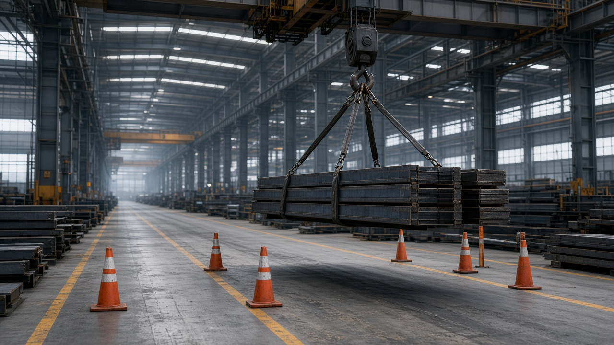

Bài viết · KTN-01 · Kỹ thuật an toàn thiết bị nâng
7 điểm phải kiểm tra trước khi nâng hàng — bỏ một điểm là đủ để xảy ra sự cố
Kiểm tra thiết bị nâng trước ca làm việc và kiểm tra trước khi nâng là hai việc khác nhau, dù thường bị nhầm là một. Kiểm tra đầu ca xác nhận thiết bị còn hoạt động tốt về tổng thể — cáp, phanh, chân chống, tín hiệu. Kiểm tra trước khi nâng là bước riêng, thực hiện ngay trước mỗi lần nâng cụ thể, xác nhận rằng lần nâng này — với tải trọng này, ở vị trí này, trong điều kiện hôm nay — là an toàn để thực hiện. Một thiết bị hoàn toàn tốt vẫn có thể gây sự cố nếu lần nâng cụ thể đó vượt quá những gì thiết bị và điều kiện hiện trường cho phép.
Bài viết này trình bày bảy điểm cần xác nhận trước mỗi lần nâng, theo đúng trình tự nên kiểm tra, và giải thích vì sao bỏ qua bất kỳ điểm nào trong bảy điểm này — dù thiết bị và người vận hành đều tốt — vẫn đủ để tạo ra một tình huống nguy hiểm.

Trước khi nâng khác kiểm tra thiết bị ở điểm nào
Sự khác biệt cốt lõi là kiểm tra thiết bị trả lời câu hỏi "thiết bị này còn tốt không", trong khi kiểm tra trước khi nâng trả lời câu hỏi "lần nâng cụ thể này có an toàn không". Một cần trục có thể hoàn toàn đạt yêu cầu kiểm tra đầu ca, nhưng nếu lần nâng tiếp theo có tải trọng vượt khả năng ở bán kính đang làm việc, hoặc góc dây cáp buộc tải không đúng, thì sự cố vẫn có thể xảy ra — không phải vì thiết bị hỏng, mà vì lần nâng đó tự thân đã không an toàn.
Vì lý do này, kiểm tra trước khi nâng phải được thực hiện lại cho mỗi lần nâng có tải trọng, hình dạng, hoặc vị trí khác với lần nâng trước, không thể coi đã kiểm tra một lần là đủ cho cả ca làm việc.
7 điểm bắt buộc trước mỗi lần nâng
- Tải trọng thực tế so với biểu tải (load chart) — xác nhận khối lượng tải thực tế, cộng thêm khối lượng dây buộc và phụ kiện, không vượt khả năng của thiết bị tại đúng bán kính và góc cần đang sử dụng.
- Góc dây cáp buộc tải — góc giữa các nhánh dây cáp càng nhỏ (dây càng dốc gần thẳng đứng) thì lực trên mỗi nhánh cáp gần với tải trọng thật; góc quá rộng làm tăng lực kéo trên từng nhánh cáp vượt xa tải trọng danh nghĩa.
- Điểm buộc hoặc điểm móc trên tải — xác nhận điểm buộc đủ chắc, đúng thiết kế, và tải được cân bằng để không bị trượt hoặc lật khi nhấc lên khỏi mặt đất.
- Mặt bằng đặt cần hoặc chân chống — xác nhận mặt bằng đủ chịu lực, không có khoảng trống ngầm, đặc biệt sau khi mưa hoặc trên nền đất mới đắp.
- Vùng nguy hiểm và rào chắn xung quanh khu vực nâng — xác nhận không có người hoặc phương tiện trong bán kính có thể bị ảnh hưởng nếu tải rơi hoặc cần trục lật.
- Tín hiệu viên và kênh liên lạc với người vận hành — xác nhận tín hiệu viên có vị trí quan sát rõ toàn bộ đường di chuyển của tải, và kênh liên lạc — bằng tay hoặc bộ đàm — hoạt động tốt.
- Điều kiện thời tiết, đặc biệt gió — xác nhận tốc độ gió tại thời điểm nâng nằm trong giới hạn cho phép của thiết bị, đặc biệt với tải có diện tích cản gió lớn như tấm panel hoặc lồng thép.

Bảng tải (load chart) — đọc đúng mới tính đúng
Bảng tải của cần trục không cho một con số tải trọng tối đa duy nhất, mà cho một bảng giá trị phụ thuộc vào bán kính làm việc (khoảng cách ngang từ tâm quay đến điểm treo tải) và chiều dài, góc nghiêng của cần. Càng nâng tải ở bán kính xa, khả năng chịu tải của cùng một cần trục càng giảm — đây là nguyên lý cơ học, không phải giới hạn kỹ thuật có thể linh động. Một lỗi thường gặp là người vận hành tra bảng tải ở bán kính gần rồi giả định con số đó áp dụng cho cả lần nâng, trong khi thực tế tải sẽ được di chuyển ra bán kính xa hơn trong quá trình nâng.
Đọc đúng bảng tải đòi hỏi xác định bán kính làm việc lớn nhất trong toàn bộ hành trình di chuyển của tải, không chỉ tại điểm bắt đầu nâng, và tra khả năng chịu tải tại đúng bán kính đó.
Tín hiệu viên và người vận hành — ai nói, ai nghe, ai quyết
Tín hiệu viên có vai trò là "mắt" của người vận hành ở những vị trí người vận hành không quan sát trực tiếp được — phía sau cabin, khu vực bị vật cản che khuất, hoặc điểm hạ tải. Để vai trò này có hiệu lực, cần thống nhất trước một bộ tín hiệu chuẩn, và quan trọng hơn, chỉ có một tín hiệu viên được chỉ định phát lệnh cho người vận hành tại một thời điểm — tránh tình huống nhiều người cùng ra tín hiệu khiến người vận hành không biết theo ai.
Người vận hành vẫn giữ quyền quyết định cuối cùng: nếu nhận thấy tín hiệu không rõ, hoặc điều kiện không đảm bảo dù tín hiệu viên đã ra lệnh nâng, người vận hành có quyền và có trách nhiệm tạm dừng để xác nhận lại.
Khi một trong 7 điểm không đạt — dừng, không nâng "tạm"
Một cách suy nghĩ nguy hiểm thường gặp là "chỉ nâng một chút để xem thử" khi một trong bảy điểm chưa được xác nhận đầy đủ — ví dụ chưa chắc điểm buộc đã cân bằng, nhưng vẫn nhấc tải lên vài chục centimet để kiểm tra. Vấn đề là ngay khi tải rời khỏi mặt đất, các lực mất cân bằng đã tác động lên toàn bộ hệ thống, và nếu điểm buộc thực sự có vấn đề, sự cố có thể xảy ra ngay trong chính hành động "nâng thử" đó.
Tình huống thực tế thường gặp
Trên hiện trường, áp lực tiến độ và thói quen “làm tắt” thường khiến người ta bỏ qua đúng những bước kiểm soát quan trọng nhất. Khi sự cố xảy ra, mọi người mới nhìn lại và thấy chuỗi sai lệch nhỏ đã xuất hiện từ trước: checklist hình thức, brief thiếu, permit ký nhưng không xác minh, vùng nguy hiểm không được phong tỏa.
Bài học chung: đừng đợi hậu quả lớn mới siết quy trình. Hãy biến các điểm dừng việc thành phản xạ tập thể.
Sai lầm hay gặp khi áp dụng
- Biết đúng nhưng không ghi nhận bằng chứng
- Giao việc mà không giao quyền dừng việc
- Đào tạo một lần rồi coi như xong năng lực
- Chỉ siết trước thanh tra / đánh giá
Việc làm trong tuần này (1 hành động)
Chỉ chọn một việc — làm xong trong 7 ngày, có bằng chứng.
- Hành động: áp dụng một điểm kiểm soát then chốt của KTN-01 vào checklist đang dùng
- Bằng chứng: Ảnh / phiếu checklist có ngày giờ + chữ ký hoặc xác nhận giám sát
- Người chịu trách nhiệm: Người phụ trách HSE khu vực + giám sát trực tiếp
Ghi nhớ: Không có bằng chứng = chưa làm. Họp ngắn cuối tuần chỉ cần trả lời: đã làm / chưa / vướng gì.
Tóm tắt mang ra hiện trường
- Kiểm tra trước khi nâng là việc riêng, khác với kiểm tra thiết bị đầu ca — cần thực hiện lại cho mỗi lần nâng có tải trọng hoặc vị trí khác nhau.
- Bảy điểm bắt buộc: tải trọng so với biểu tải, góc dây cáp, điểm buộc, mặt bằng đặt cần, vùng nguy hiểm, tín hiệu viên, và điều kiện gió.
- Đọc bảng tải phải theo bán kính làm việc lớn nhất trong toàn bộ hành trình di chuyển tải, không chỉ tại điểm bắt đầu nâng.
- Chỉ một tín hiệu viên được chỉ định phát lệnh tại một thời điểm; người vận hành vẫn giữ quyền dừng lại nếu thấy tín hiệu hoặc điều kiện không rõ ràng.
- Không có khái niệm nâng thử hay nâng tạm khi một trong bảy điểm chưa đạt — phải xử lý xong điểm đó trước khi tải rời khỏi mặt đất.
Bạn phụ trách hoặc giám sát thiết bị nâng
Học bài bản với khóa KTN-01
Kỹ thuật an toàn thiết bị nâng — học online, tiến độ cá nhân, 99.000đ, kiểm tra cuối khóa, chứng nhận tùy điều kiện.